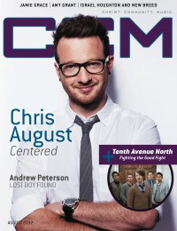

Chris August
|  |
| August 2012 CCM Digital |
 |
| 1 April 2015 CCM Digital |
Media coverage:
- Aug 2010 in CCM Digital "What's New: Chris August", by Caroline Lusk
- Nov 2010 in CCM Digital "Gear Guide: Chris August", by Caroline Lusk
- Jan 2011 in CCM Digital "7x70: Chris August Embraces the cost of forgiveness and the price of freedom", by Caroline Lusk
- Aug 2012 in CCM Digital "Centered", by Grace S. Aspinwall
- Jul 2013 in CCM Digital "Musicians Corner: Story Behind the Song: You Are"
- 15 Jul 2014 in CCM Digital "Tour Spotlight: Metropolis Performing Arts Centre, Arlington Heights, IL", by Andy Argyrakis
- 1 Apr 2015 in CCM Digital "Meeting His Maker", by Caroline Lusk
Albums & reviews:
2010: No Far Away
- Aug 2010 in Charisma
- Aug 2010 in CCM Digital, by Andy Argyrakis
- Sep 2010 in Worship Leader, by Katie Finley
- Aug 2012 in CCM Digital, by Grace S. Aspinwall
- Oct 2012 in Worship Leader, by Lindsay Young
- 15 Dec 2014 in CCM Digital
- 1 Apr 2015 in CCM Digital, by Grace S. Aspinwall
Award Summary (Nominations / Wins)
Dove Awards- 2011 Dove Awards
- Song: "Starry Night"
- Male Vocalist
- Pop/Contemporary Album: No Far Away
- New Artist
- Pop/Contemporary Recorded Song: "Starry Night"
- Male Vocalist
- Short Form Music Video: "7&70"
Published articles:
© 2011 CMnexus. Last updated April 2021. Contact: editor -AT- cmnexus -DØT- org About